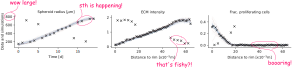
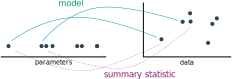
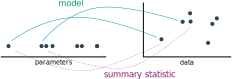

abc
likelihood-free Bayesian inference
- common optimization and sampling methods (e.g. MCMC) require the (unnormalized) likelihood
- can happen: numerical evaluation infeasible
- ... but still possible to simulate data $y\sim\pi(y|\theta)$
mini-intro abc
- approximate Bayesian computation enables Bayesian inference for $$\pi(\theta|y_\text{obs}) \propto \pi(y_\text{obs}|\theta)\pi(\theta)$$ even if the likelihood cannot be evaluated
- until $N$ acceptances:
- sample parameters $\theta\sim\pi(\theta)$
- simulate data $y\sim\pi(y|\theta)$
- accept if $d(s(y), s(y_\text{obs}))\leq\varepsilon$
- often combined with an SMC scheme, $\varepsilon\rightarrow\varepsilon_t$, $\pi(\theta)\rightarrow g_t(\theta)$, $d\rightarrow d_t$, $t=1,\ldots,n_t$
the problem:
fitting heterogeneous data
how to choose good summary statistics and distance functions?
robust adaptive distances
background: adaptive distances


- a common distance metric in ABC is a weighted Euclidean distance $$d(y,y_\text{obs}) = \left(\sum_{i_y}(r_{i_y} \cdot (y_{i_y} - y_{{i_y},\text{obs}}))^2\right)^{1/2}$$
- e.g. $r_{i_y} = \operatorname{Var}[\{y_{i,i_y}\}_{i\geq 1}]^{-1}$ to normalize scales
- Prangle 2017: in ABC-SMC, updating weights $r^t$ iteratively to adjust to the changed proposal structure improves performance substantially
problems
- highly sensitive to outliers
- can perform badly for high-dimensional problems
solutions
- robust Manhattan norm with bounded variance
- active online outlier detection and down-weighting by bias assessment, $$r_{i_y} = \mathbb{E}[(y_{i_y} - y_{{i_y},\text{obs}})^2]^{-1} = (\text{Var}[\{y^i_{i_y}\}_{i}] + \text{Bias}[\{y^i_{i_y}\}_{i},y_{{i_y},\text{obs}}]^2)^{-1/2}$$ (or robust variants based on MAD and MADO)
- apply bias corection if only few coordinates have large bias
- yields a widely applicable efficient and robust distance metric
theorem (convergence of ABC posterior)
Consider prior $\pi(\theta)$ and likelihood $\pi(y|\theta)$ densities,
with posterior $\pi(\theta|y_\text{obs})\propto \pi(y_\text{obs}|\theta)\pi(\theta)$,
and measurable distance metrics $d_t$.
Assume that for the acceptance regions
$A_t = \{y:d_t(y,y_\text{obs})\leq\varepsilon_t\}$ holds $\lim_{t\rightarrow \infty}|A_t| = 0$,
and that the $A_t$ have bounded eccentricity at $y_\text{obs}$.
Then, for functions $\xi:\mathbb{R}^{n_\theta}\rightarrow\mathbb{R}$ with
$\mathbb{E}_{\pi(\theta)}[|\xi|]<\infty$ holds
$$
\mathbb{E}_{\pi_{\text{ABC},\varepsilon_t(\theta|y_\text{obs})}}[\xi] \xrightarrow{t\rightarrow\infty}\mathbb{E}_{\pi(\theta|y_\text{obs})}[\xi]\quad\text{for almost-all}~y_\text{obs}.
$$
Proof: Yep.
results
accurate results on various problem types, on outlier-free and outlier-corrupted dataapplication example M6: tumor growth
based on Jagiella et al., Cell Systems 2017
- cells modeled as interacting stochastic agents, dynamics of extracellular substances by PDEs
- simulation time on the order of seconds
- 7 parameters
informative distances and summary statistics
background: regression-based summary statistics
 

background: regression-based summary statistics
- Fearnhead et al. 2012: Good statistics are $s(y) = \mathbb{E}[\theta|y]$
- use a linear approximation $\mathbb{E}[\theta|y] \approx s(y) = Ay + b$
- learn model $s: y\mapsto\theta$ from calibration samples, with (augmented) data as features, and parameters as targets
- alternative regression models: DNN (Jiang et al. 2017), GP (Borowska et al. 2020)
problems
- scale-normalized distances alone do not account for informativeness
- identification of a high-density region for training
- the same problems motivating adaptive distances apply, shifted to "parameter" space
- parameter non-identifiability problematic for regression models
solutions
- combine regression-based summary statistics with scale-normalized weights
- integrate summary statistics learning in ABC-SMC workflow
- regression-based sensitivity distance weights as an alternative way of incorporating informativeness
- employ higher-order moments as regression targets to tackle non-identifiability
regression-based sensitivity distance weights
idea: employ regression model $s:y\mapsto\theta$ not to construct summary statistics, but to define sensitivity weights \begin{equation}\label{eq:info_weight} q_{i_y} = \sum_{i_\theta=1}^{n_\theta} \frac{\left|S_{i_yi_\theta}\right|}{ \sum_{j_y=1}^{n_y}\left|S_{j_yi_\theta}\right|}, \end{equation} as the sum of the absolute sensitivities of all parameters with respect to model output $i_y$, normalized per parameter, where \begin{equation}\label{eq:info_S} S = \nabla_y s(y_\text{obs})\in\mathbb{R}^{n_y \times n_\theta} \end{equation}theorem (optimal summary statistics)
[...] Given $\lambda:\mathbb{R}^{n_\theta}\rightarrow\mathbb{R}^{n_\lambda}$ such that $\mathbb{E}_{\pi(\theta)}[|\lambda(\theta)|]<\infty$, define summary statistics as the conditional expectation
$$s(y) := \mathbb{E}[\lambda(\Theta)|Y=y] = \int \lambda(\theta)\pi(\theta|y)d\theta.$$
Then, it holds
$\left\lVert{\mathbb{E}_{\pi_{\text{ABC},\varepsilon}}[\lambda(\Theta)|s(y_\text{obs})] - s(y_\text{obs})}\right\rVert \leq \varepsilon$,
and therefore
\begin{equation}\label{eq:sreg_conv}
\lim_{\varepsilon\rightarrow 0}\mathbb{E}_{\pi_{\text{ABC},\varepsilon}}[\lambda(\Theta)|s(y_\text{obs} )] = \mathbb{E}[\lambda(\Theta)|Y=y_\text{obs}].
\end{equation}
Proof: Yep.
In practice: Use regression model $s: y \mapsto \lambda(\theta) = (\theta^1,\ldots,\theta^k)$.implementation
from pyabc import *
distance: Distance = AdaptivePNormDistance(
sumstat=ModelSelectionPredictorSumstat(
predictors=[
LinearPredictor(),
GPPredictor(kernel=['RBF', 'WhiteKernel']),
MLPPredictor(hidden_layer_sizes=(50, 50, 50)),
],
),
scale_function=rmse,
pre=[lambda x: x, lambda x: x**2],
par_trafo=[lambda y: y, lambda y: y**2],
)
🦁 a boss model
- $y_1\sim\mathcal{N}(\theta_1,0.1^2)$ is informative of $\theta_1$, with a relatively wide corresponding prior $\theta_1\sim U[-7, 7]$,
- $y_2\sim\mathcal{N}(\theta_2,100^2)$ is informative of $\theta_2$, with corresponding prior $\theta_2\sim U[-700, 700]$,
- $y_3\sim\mathcal{N}(\theta_3, 4 \cdot 100^2)^{\otimes 4}$ is a four-dimensional vector informative of $\theta_3$, with corresponding prior $\theta_3\sim U[-700, 700]$,
- $y_4\sim\mathcal{N}(\theta_4^2, 0.1^2)$ is informative of $\theta_4$, with corresponding symmetric prior $\theta_4\sim U[-1, 1]$, however is quadratic in the parameter, resulting in a bimodal posterior distribution for $y_{\text{obs},4}\neq 0$,
- $y_5\sim\mathcal{N}(0, 10)^{\otimes 10}$ is an uninformative 10-dimensional vector.

 applicable to outlier-corrupted data
applicable to outlier-corrupted data
discussion
discussion
summary
- accounting for both scale and informativeness often useful
- provided two approaches using regression-based summary statistics and distance weights, with scale normalization and addressing parameter non-identifiability
- robustly applicable also to outlier-corrupted data
outlook
- model selection and alternative regression models
- training specification and assessment
- maybe a goal: fully integrated reliable workflow
- ...